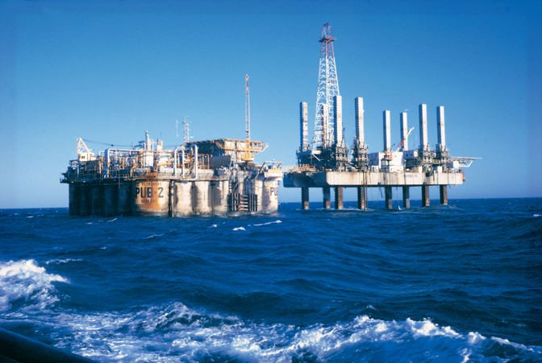
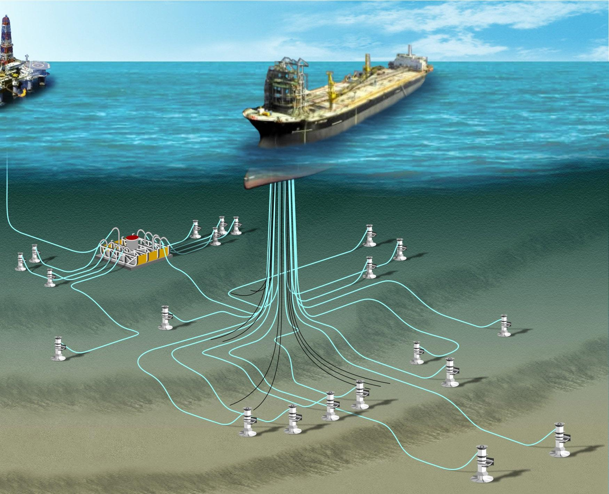
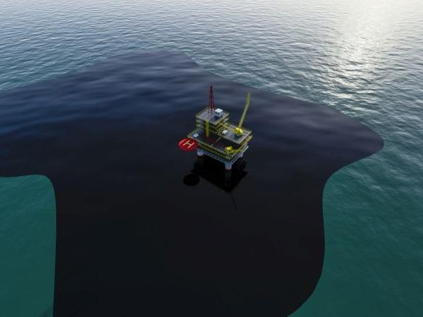
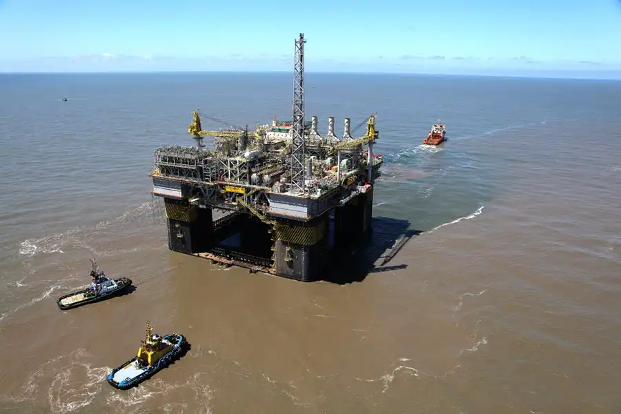
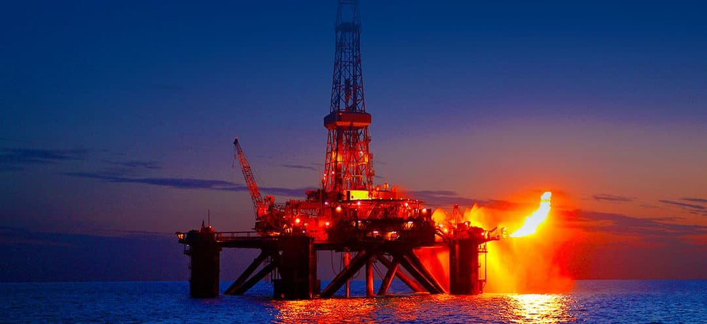
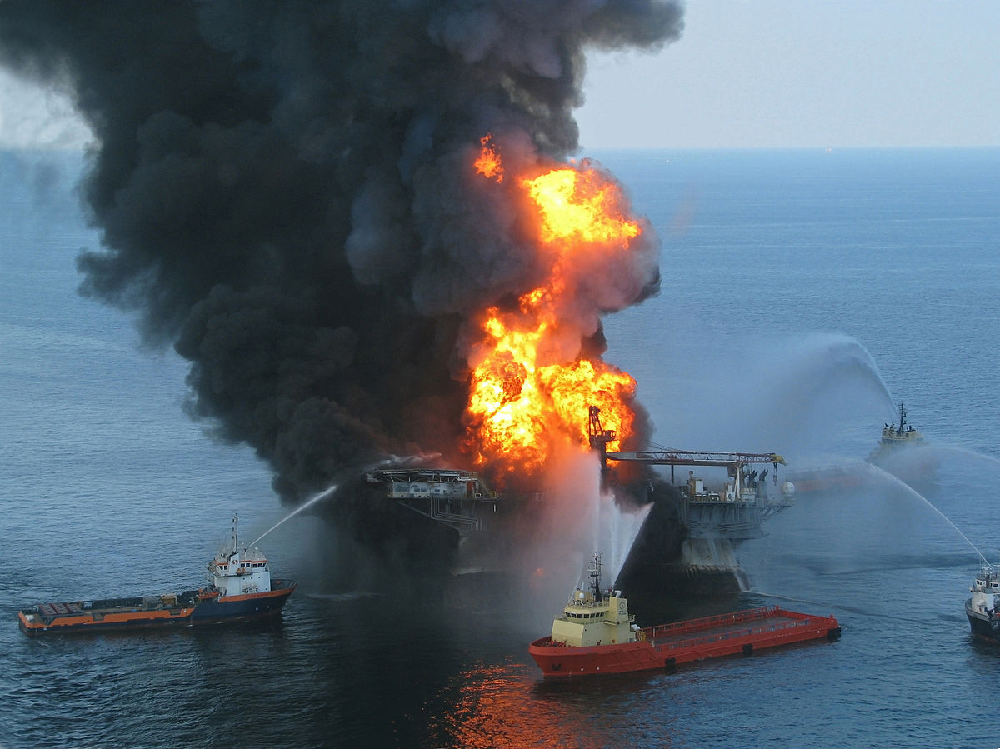

A exploração de petróleo em águas profundas segue avançando, apesar dos repetidos alertas sobre seus impactos devastadores. Cada nova plataforma instalada representa uma ameaça latente, um potencial desastre à espera do menor erro humano ou falha técnica. Os oceanos, já sobrecarregados por poluição, pesca predatória e mudanças climáticas, agora precisam suportar também os riscos constantes da indústria petrolífera.
Os acidentes não são exceções, mas consequências previsíveis de se operar em ambientes extremos e de difícil controle. O derramamento da Deepwater Horizon não foi um incidente isolado - foi o retrato mais visível de um problema crônico. Desde então, outros vazamentos menores, muitas vezes subnotificados, continuam a ocorrer regularmente em plataformas ao redor do mundo, cada um deixando seu rastro de destruição.
A vida marinha paga o preço mais alto. Espécies que já lutam contra as alterações em seus habitats agora enfrentam a contaminação por hidrocarbonetos, a destruição de seus locais de reprodução e os efeitos insidiosos da poluição sonora submarina. Ecossistemas inteiros, que levaram milênios para se desenvolver, podem ser dizimados em questão de dias quando ocorre um grande vazamento.

Fonte Disponível em: Kl offshore

Fonte Disponível em: Jorna Pelicano
Economicamente, a conta também não fecha. Enquanto empresas petrolíferas registram lucros recordes, as comunidades costeiras arcam com os prejuízos quando os acidentes acontecem. A pesca é prejudicada, o turismo sofre, e os custos de limpeza e recuperação ambiental frequentemente recaem sobre os cofres públicos. Mesmo assim, os mesmos erros se repetem, ciclo após ciclo.
A regulamentação internacional, por mais avançada que seja, mostra-se insuficiente diante da complexidade das operações em águas profundas. Fiscalizar plataformas localizadas a centenas de quilômetros da costa é caro e difícil, criando brechas para negligências e atalhos perigosos. Os planos de contingência, quando existem, muitas vezes subestimam a magnitude dos possíveis desastres.
Enquanto isso, os oceanos continuam a ser tratados como territórios de exploração, onde os interesses econômicos falam mais alto que a preservação ambiental. Cada novo poço perfurado é uma aposta arriscada, onde o prêmio vai para as corporações e o prejuízo fica para o meio ambiente e as gerações futuras.
A exploração de petróleo em águas profundas carrega consigo um risco inerente: os vazamentos de óleo. Mesmo com avanços tecnológicos, acidentes como o da Deepwater Horizon (2010) no Golfo do México provam que os sistemas de segurança podem falhar, resultando em catástrofes ambientais de proporções incalculáveis. Estima-se que, apenas nos últimos 50 anos, mais de 10 milhões de barris de petróleo tenham vazado no mar devido a acidentes com plataformas e oleodutos. Em águas profundas, onde a pressão é extrema e o acesso difícil, conter um vazamento torna-se ainda mais complexo, permitindo que o óleo se espalhe por centenas de quilômetros.
Os impactos imediatos de um derramamento são devastadores. O petróleo forma uma camada espessa na superfície do mar, bloqueando a passagem de luz e reduzindo o oxigênio disponível para a vida marinha. Aves aquáticas, como pelicanos e gaivotas, ficam encharcadas de óleo, perdendo a capacidade de voar e regularem sua temperatura corporal, o que frequentemente leva à morte por hipotermia ou envenenamento. Tartarugas-marinhas e mamíferos, como golfinhos e baleias, sofrem intoxicação ao inalar vapores tóxicos ou ingerir água contaminada. Corais, fundamentais para o equilíbrio dos ecossistemas, podem levar décadas para se recuperar.
Além dos efeitos agudos, os componentes tóxicos do petróleo persistem no ambiente por anos, infiltrando-se na cadeia alimentar. Hidrocarbonetos policíclicos aromáticos (HPAs), presentes no óleo cru, são cancerígenos e bioacumulativos, contaminando desde pequenos organismos, como plânctons, até peixes e mariscos consumidos por humanos. Estudos mostram que, mesmo após a limpeza visível, resíduos de petróleo permanecem no sedimento marinho, intoxicando espécies bentônicas e comprometendo a reprodução de animais marinhos por gerações.

Fonte Disponível em: Teconologia e

Fonte Disponível em: Infomoney
Os métodos de contenção e limpeza também apresentam limitações. Barreiras flutuantes e skimmers (equipamentos que recolhem óleo da superfície) são ineficazes em mar aberto com ondas fortes. Dispersantes químicos, usados para fragmentar o petróleo em partículas menores, podem ser tão ou mais tóxicos que o próprio óleo, intoxicando organismos marinhos e dificultando a degradação natural. Em águas profundas, como no caso do Pré-Sal brasileiro, um vazamento em grandes profundidades poderia levar semanas para ser controlado, ampliando drasticamente a área afetada.
A indústria petrolífera argumenta que os vazamentos são raros, mas dados revelam que pequenos derramamentos ocorrem com frequência alarmante. Entre 2007 e 2017, apenas nos EUA, houve 6.000 vazamentos registrados em plataformas offshore, muitos deles não divulgados ao público. Em países com fiscalização frágil, como alguns da África e América Latina, o problema é ainda mais subnotificado. Além dos acidentes, operações rotineiras, como a limpeza de tanques e descarte de água de produção (subproduto da extração), liberam continuamente petróleo e metais pesados no oceano.
Diante desse cenário, especialistas alertam que o risco de novos desastres só aumenta conforme a exploração avança para águas mais profundas e remotas. Regiões como o Ártico e o Atlântico Sul, onde condições extremas dificultam operações de emergência, são particularmente vulneráveis.
A exploração de petróleo em águas profundas enfrenta um perigo constante: as explosões em plataformas. Entre 2001 e 2021, ocorreram pelo menos 47 explosões significativas em plataformas offshore no mundo, segundo dados da Bureau of Safety and Environmental Enforcement (BSEE) dos EUA e da International Association of Oil & Gas Producers (IOGP). O incidente mais catastrófico foi a explosão da Deepwater Horizon em 2010, que matou 11 trabalhadores e iniciou o maior vazamento de petróleo da história. No entanto, mesmo explosões menores podem causar mortes, perdas materiais de milhões de dólares e danos ambientais graves.
As causas dessas explosões variam, mas geralmente envolvem falhas humanas, defeitos em equipamentos ou vazamentos de gás não detectados. Durante a perfuração, a liberação repentina de metano ou outros hidrocarbonetos sob alta pressão pode criar uma mistura explosiva com o oxigênio do ar. Basta uma faísca de equipamentos elétricos, soldagem ou até mesmo um celular – para desencadear uma tragédia. Plataformas mais antigas, com sistemas de prevenção defasados, são especialmente vulneráveis a esses acidentes.
Os impactos humanos são devastadores. Trabalhadores offshore enfrentam riscos extremos: além das explosões, podem sofrer queimaduras graves, quedas ao mar ou ficar presos em estruturas em colapso. Muitas plataformas operam em locais remotos, onde o resgate pode levar horas, reduzindo as chances de sobrevivência em emergências. Apesar dos treinamentos de segurança, relatórios mostram que cortes de custos e jornadas exaustivas aumentam a probabilidade de erros humanos um fator presente em 70% dos acidentes, segundo a OGP.

Fonte Disponível em: Kl offshore

Fonte Disponível em: Wikipedia
Além das vítimas humanas, as explosões frequentemente desencadeiam vazamentos de óleo em larga escala. Quando uma plataforma é destruída, como ocorreu com a Piper Alpha (1988) no Mar do Norte, os danos aos dutos submarinos podem liberar petróleo por semanas antes do vazamento ser contido. O fogo resultante das explosões também queima parte do óleo, criando uma fumaça tóxica que contamina o ar e a água, afetando a vida marinha e, potencialmente, populações costeiras.
Apesar dos avanços em tecnologia de segurança como sensores de gás mais precisos e válvulas de corte automático, a indústria ainda não eliminou o risco de explosões. Plataformas em águas ultraprofundas, como as do Pré-Sal brasileiro, operam sob pressões ainda maiores, onde qualquer falha pode ter consequências catastróficas. Além disso, investigações pós-acidentes frequentemente revelam que problemas conhecidos foram ignorados antes das tragédias, como ocorreu no caso da Deepwater Horizon.
Enquanto isso, a busca por petróleo em áreas cada vez mais remotas e profundas continua, pressionada pela demanda global por combustíveis fósseis. Governos e empresas argumentam que os protocolos de segurança melhoraram, mas acidentes recentes – como o incêndio na plataforma Pemex Ku-C no Golfo do México (2021) mostram que o perigo persiste. Para trabalhadores offshore e ecossistemas marinhos, cada nova plataforma representa uma ameaça latente, onde um único descuido pode ter consequências irreversíveis.
Maiores acidentes em plataformas de petróleo
Derramamento de petróleo entenda o impacto e suas consequências